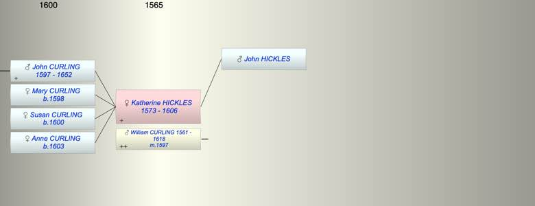

| [Index] |
| Katherine HICKLES (1573 - 1606) |
|  |
| b. 1573 at St Laurence |
| m. 28 Oct 1597 William CURLING (1561 - 1618) at St Laurence |
| d. abt 1606 aged 33 |
| Parents: |
| John HICKLES |
| Children (4): |
| John (1) CURLING (1597 - 1652) |
| Mary CURLING (1598 - ) |
| Susan CURLING (1600 - ) |
| Anne CURLING (1603 - ) |
| Grandchildren (6): |
| William (II) CURLING (1623 - 1660), Anne CURLING (1625 - ), John CURLING (1627 - ), Jane CURLING (1628 - ), Susanna CURLING (1629 - ), Elizabeth CURLING (1630 - ) |
| Events in Katherine HICKLES (1573 - 1606)'s life | |||||
| Date | Age | Event | Place | Notes | Src |
| 1573 | Katherine HICKLES was born | St Laurence | Note 1 | ||
| 1597 | 24 | Birth of son John (1) CURLING | St Peters | Note 2 | |
| 28 Oct 1597 | 24 | Married William CURLING (aged 36) | St Laurence | ex FMP | |
| 1598 | 25 | Birth of daughter Mary CURLING | St Peters | Note 3 | |
| 1600 | 27 | Birth of daughter Susan CURLING | St Peters | Note 4 | |
| 1603 | 30 | Birth of daughter Anne CURLING | St Peters | Note 5 | |
| abt 1606 | 33 | Katherine HICKLES died | |||
| Created on a Mac™ using iFamily for Mac™ on 8 Oct 2023 |